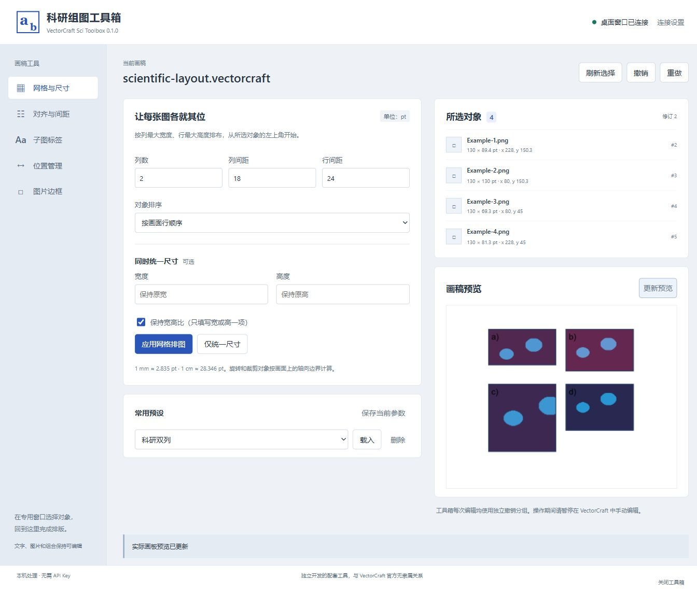

在浏览器面板中，
安排本机画稿。
中文科研组图面板通过本机服务连接 VectorCraft 桌面窗口，完成排图、尺寸、子图标签、对齐、间距和位置管理。编辑结果仍保存在可编辑的 VectorCraft 文档中。

这版可以做什么
- 固定列网格排图，按比例或独立统一宽高。
- 对齐、设置净间距，复制或交换绝对／相对位置。
- 添加并更新可编辑子图标签和图片边框。
- 保存常用参数、查看画稿预览，每次编辑独立撤销。
运行本机工具箱后在浏览器中使用；需要已安装的 VectorCraft。日常使用无需 AI API Key。
寻找内嵌的增强版？
VectorCraft SCI Native 已作为独立项目维护。原生 RC2 包含右侧科研停靠面板、原生取色、比例尺、多 ROI、伪彩和通道合并。